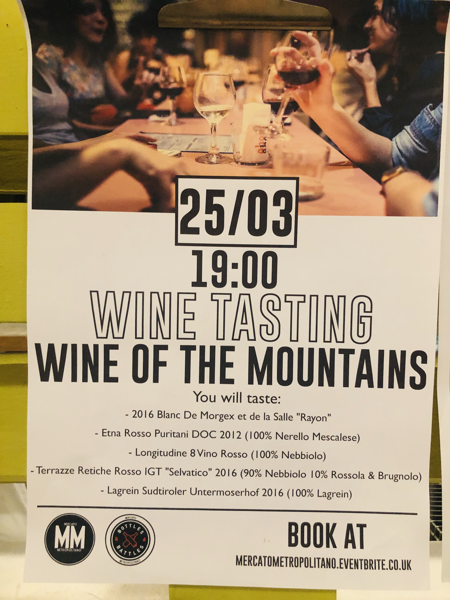
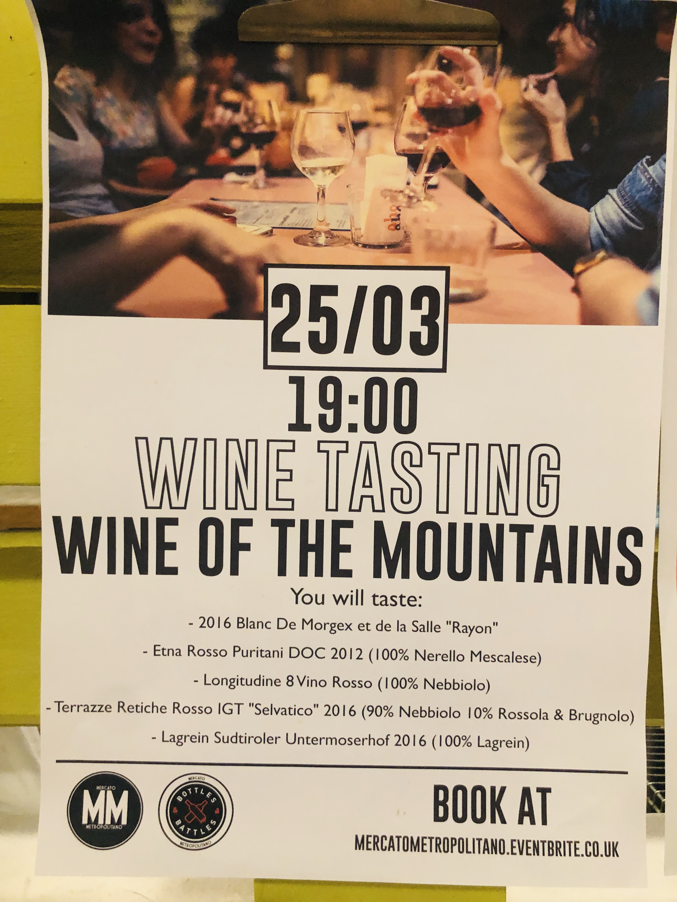

Our musicians, vendors and all employees help us create a progressive network where everyone can enjoy sustainable food, try different cuisines, learn about new cultures, become responsible, discover how to cook and plant and finally enjoy the vibrant atmosphere Mercato Metropolitano has to offer.
All our stakeholders play a key part in our success! This blog will focus on some of our vendors and their take on what MM has to offer. We have spoken to Girolamo from ‘Little Sicily’, Gabriele - our executive chef, Nancy Nösel from ‘Spatzle’, Ginger Zerbetto from ‘That’s food’ and many more vendors! Keep reading to find out why anyone should join Mercato as a vendor today…
You don’t just join Mercato, you join a family...
Zerbetto highlights how Mercato is a concept based on families, friends and high-quality food where people can enjoy freedom without much fuss. MM provides a place where vendors can bring in absolutely anything sustainable; from vegetarian, vegan, seafood, beer or wine. There’s no restriction, you are constantly meeting new people and learning from everyone around you. Zerbato also emphasizes how he comes to Mercato even on his day off – thus illuminating how this isn’t just a place to work, but to enjoy too. “You are with friends, even if you don’t know anyone” – Ginger Zerbetto
An established plaftorm to work in
Nancy Nösel from Spatzle who won the ‘Female Founders’ competition in 2018 states how Mercato Metropolitano is a great platform to reach customers and to get your company name out there in the market. Nösel goes on to say how MM allows you to grow as a person and a business owner, where the company empowers you with various skills and knowledge, you can always take forward.
No cash, No problem.
As a vendor it gives you the opportunity to run your own business even if you don’t have a lot of investment available. Mercato does not charge vendors any rent and only takes a small cut from the sales. So, if vendors do well, so does Mercato! This gives young entrepreneurs a good opportunity to start from somewhere.
You learn, you grow, and you prosper
Everything you do at Mercato, you do to learn. MM ensures everyone get an equal chance to move forward at every step. Gabriele Bagni states how people that were once cleaning dishes and tables have become managers. At Mercato, YOU matter, YOU move up, and YOU progress. Bagni goes on to say how Mercato focuses on two main things; to educate and to teach. Teaching is just conveying something to someone. Whereas, educating is showing them how exactly something is done.
Make the world a better place, one step at a time
When you're a part of MM. You're part of a shared movement, a shared mission and shared goals. Our vision is to educate the community and to deliver a good food experience that goes beyond just eating.

 
